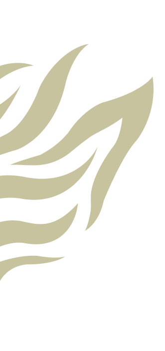
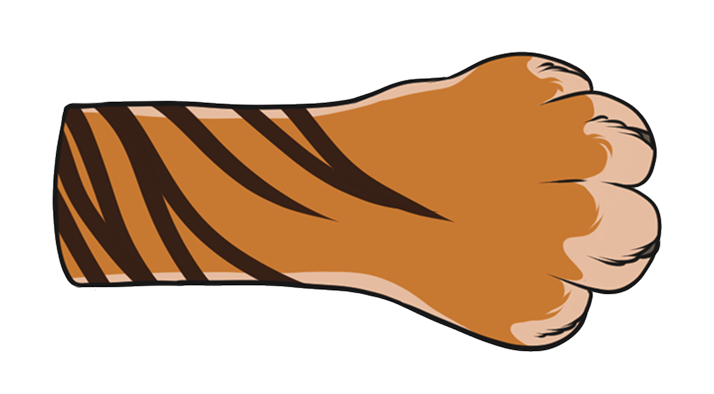
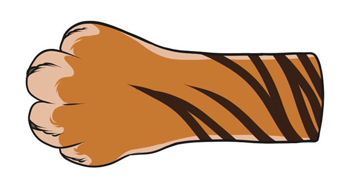
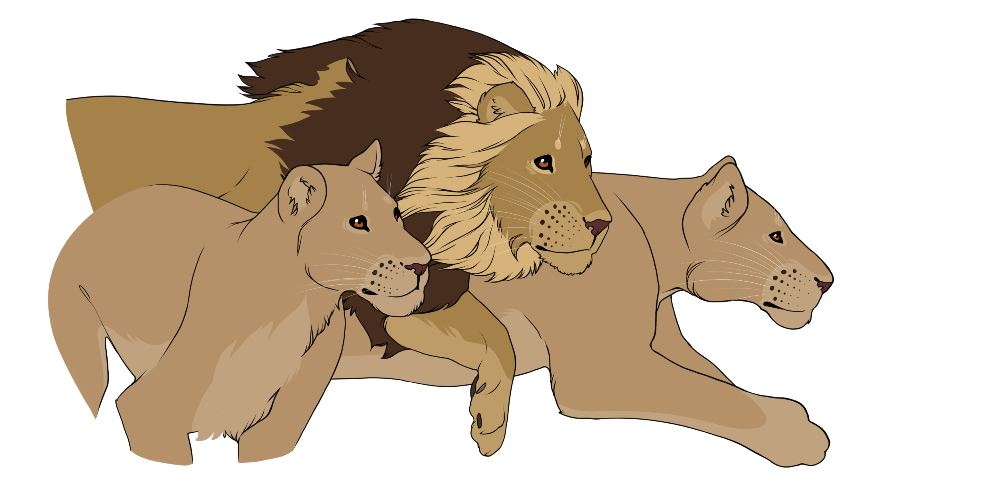

Wspieraj naszą misję, aby zapewnić tym wspaniałym zwierzętom lepszą przyszłość!


Strona powstała z pasji do dzikich kotów i potrzeby działania na rzecz ich ochrony. Jej celem jest zwiększanie świadomości o zagrożonych gatunkach, informowanie o ich sytuacji oraz wspieranie działań fundacji zajmujących się ich ratowaniem. Pomysł stworzenia tej witryny zrodził się z osobistego zainteresowania dziką przyrodą i chęci zaangażowania się w realną pomoc dla zwierząt, którym grozi wyginięcie.
Społeczność może zgłaszać przypadki dzikich kotów w potrzebie za pośrednictwem prostego formularza online.Informacje, takie jak lokalizacja, opis sytuacji oraz kontakt do zgłaszającego, są zbierane, aby ułatwić interwencję.
Zespół interwencyjny: Nasz wykwalifikowany zespół działa szybko w przypadkach kryzysowych. W skład zespołu wchodzą weterynarze, behawioryści oraz wolontariusze, którzy są gotowi do akcji w terenie.
Badania weterynaryjne: Po złapaniu kota, przeprowadzamy kompleksowe badania, aby ocenić jego stan zdrowia. Testujemy na choroby, urazy i ogólną kondycję. Na podstawie wyników badań tworzymy indywidualny plan leczenia i rehabilitacji.
Oferujemy odpowiednią opiekę weterynaryjną, w tym leczenie ran, chorób i zabiegów chirurgicznych, jeśli są konieczne. Koty często potrzebują czasu na przystosowanie się po traumatycznych doświadczeniach.
Organizujemy warsztaty i prelekcje, aby informować społeczność o dzikich kotach, ich potrzebach oraz sposobach, jak można je chronić. Po rehabilitacji staramy się znaleźć nowe, odpowiedzialne domy dla kotów, oferując wsparcie i doradztwo przyszłym opiekunom.
Po adopcji monitorujemy koty, aby upewnić się, że dobrze adaptują się w nowych domach. Regularnie kontaktujemy się z adopcjami, aby zbierać informacje o ich stanie zdrowia i samopoczuciu.

Twoja pomoc ma realny wpływ na przyszłość zagrożonych gatunków wielkich kotów. Przekazując darowiznę, wspierasz działania fundacji, które ratują życie dzikim kotom, chronią ich naturalne środowisko i walczą o ich przetrwanie. Każda wpłata, niezależnie od wysokości, przyczynia się do ochrony tych majestatycznych zwierząt.
Tutaj znajdziesz najnowsze wieści z naszego azylu i terenu – uratowane koty, ważne interwencje, wzruszające historie i sukcesy, które zawdzięczamy ludziom takim jak Ty. Zaglądaj regularnie i zobacz, jak wspólnie zmieniamy świat dzikich kotów na lepsze!
46
W 2024 roku nasza fundacja przeprowadziła 46 misji ratunkowe i przeprowadziła 120 kontroli warunków w nielegalnych hodowlach oraz cyrkach.
439
Uratowaliśmy 439 dzikich kotów, w tym lwy, tygrysy i lamparty – wiele z nich po latach cierpienia trafiło do bezpiecznych azylów.
350 000+
Ponad 350 000 osób podpisało petycję o zakaz trzymania dzikich kotów w prywatnych rękach. Dzięki tej akcji rząd rozpoczął prace nad nową ustawą ochrony zwierząt egzotycznych.
© 2025 Beata Kurek | Fundacja Lynx Foundation ratująca dzikie koty. Wszystkie prawa zastrzeżone.
Zaobserwuj nas